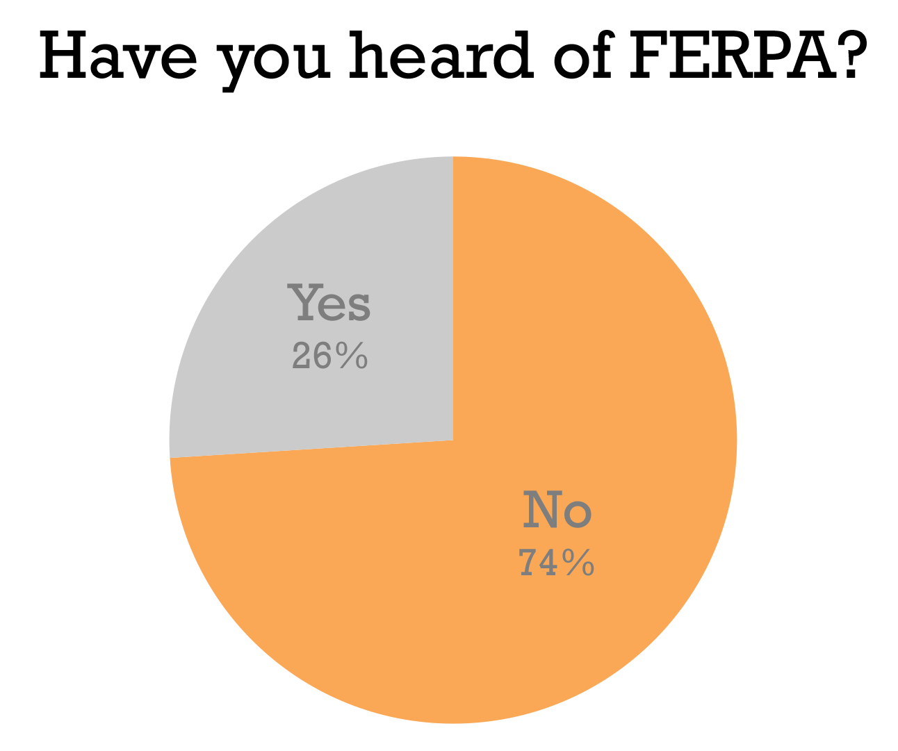
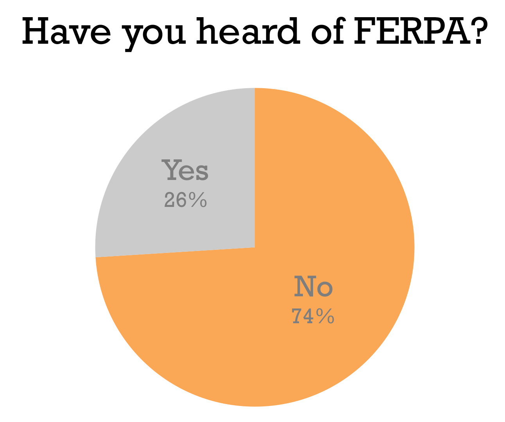

Welcome
State & Federal Laws
Europeans look at privacy much different than we do here in US ... there, a sort of “constitutional right” to privacy ... here, privacy by design-- no inherent privacy rights, instead defined by wherever we can find a state/federal statute ... ex: students are protected under FERPA ... alos state statutes that require notification/report of a breach, etc.
+ Family Educational Rights & Privacy Act (FERPA)
FERPA was signed into US federal law by President Gerald Ford in 1974. It applies to educational institutions that receive funding from the Department of Education. The law gives parents access to their children's records, an opportunity to have records amended, and some control of information from the records. After a student is 18 years old, schools must get receive the student's consent prior to disclosure of his or her education records.
The University Registrar's site provides a notification of Stanford students' rights afforded under Ferpa. These include:
| The right to consent to disclosures of personally identifiable information contained in the student's education records, except to the extent that FERPA authorizes disclosure without consent. | The right to file a complaint with the U.S. Department of Education concerning alleged failures by the University to comply with the requirements of FERPA. |
| The right to request the amendment of the student's education records that the student believes are inaccurate, misleading, or otherwise in violation of the student's privacy rights under FERPA. | The right to inspect and review the student's education records within 45 days of the date the University receives a request for access. |
For more information, refer to the Registrar's webpage.
+ Health Insurance Portability & Accountability Act (HIPAA)
This law was passed in 1996 to protect information associated with an individual’s medical records and history. It’s main provisions are set out in two rules: the “Privacy Rule” and the “Security Rule.”
Since Stanford operates medical institutions and provides medical services, it must comply with the expectations set out by HIPAA.
Privacy Rule: limits Stanford University's use and disclosure of information that could potentially associate an individual's identity with his/her health information
Security Rule: requires Stanford University to implement administrative, technical, and physical safeguards to ensure the confidentiality, integrity and availability of PHI (Personal Health Information) maintained in an electronic form ("ePHI") and to protect ePHI against any reasonably anticipated threats or hazards, unauthorized uses or disclosures.
+ Gramm-Leach-Bliley Act
The Gramm-Leach-Bliley Act requires financial institutions to explain their information-sharing practices to their customers and to safeguard sensitive data. The term “financial institutions” spans all establishments that offer consumers financial products or services like loans, financial or investment advice, or insurance.
Stanford's Policy
Public Directory Information
Any school, company, district, or entity that maintains records about its students, employees, or associated personels are required to disclose the type of information that an entity considers directory information. Directory information is publically accessible information about an entity’s people. We examine and compare the directory information of Stanford and UC Berkeley.
Stanford | UC Berkeley |
|---|---|
Name Email addresses Specific quarters of registration Degree(s) awarded and date(s) Major(s), minor(s), and field(s) Degree honors Student theses and dissertations Participation in officially activities Weight and height (for athletic teams) Prior institutions/schools ID card photographs |
Name Addresses (local/permanent/email) Telephone number(s) Date and place of birth Dates of attendance Class level Units enrolled Major(s), minor(s), field(s) Prior institutions/schools Degree(s) and honor(s) Participation in official activities Weight and height (for athletic teams) |
UC Berkeley discloses slightly more information about its students than Stanford does. For example, Stanford only discloses email addresses while UC Berkeley can disclose a student’s physical and email addresses. These difference are not related to the fact that these are private and public schools, rather it simply the fact that different schools have different policies. Regardless of what school anyone goes to, it is important that people understand the kinds of information a school may publicly disclose about them.
Data Classification at Stanford
Stanford classifies information under four categories: unrestrictedInformation is classified as Prohibited if protection of the information is required by law/regulation or Stanford is required to self-report to the government and/or provide notice to the individual if information is inappropriately accessed, confidentialInformation is classified as Restricted if (i) it would otherwise qualify as "Prohibited" but it has been determined by the DGB that prohibiting information storage on Computing Equipment would significantly reducefaculty/staff/student effectiveness when acting in support of Stanford's mission and/or (ii) it is listed as Restricted in the "Classification of Common Data Elements" below., restrictedInformation is classified as Confidential if (i) it is not considered to be Prohibited or Restricted and is not generally available to the public, or (ii) it is listed as Confidential in the "Classification of Common Data Elements"., and prohibitedInformation is classified as Unrestricted if it is not considered to be Prohibited, Restricted, or Confidential..
Student Involvement
 



Cupcake ipsum dolor sit. Amet I love liquorice jujubes pudding croissant I love pudding. Apple pie macaroon toffee jujubes pie tart cookie applicake caramels. Halvah macaroon I love lollipop. Wypas I love pudding brownie cheesecake tart jelly-o. Bear claw cookie chocolate bar jujubes toffee.
Cupcake ipsum dolor sit. Amet I love liquorice jujubes pudding croissant I love pudding. Apple pie macaroon toffee jujubes pie tart cookie applicake caramels. Halvah macaroon I love lollipop. Wypas I love pudding brownie cheesecake tart jelly-o. Bear claw cookie chocolate bar jujubes toffee.
Cupcake ipsum dolor sit. Amet I love liquorice jujubes pudding croissant I love pudding. Apple pie macaroon toffee jujubes pie tart cookie applicake caramels. Halvah macaroon I love lollipop. Wypas I love pudding brownie cheesecake tart jelly-o. Bear claw cookie chocolate bar jujubes toffee.
Cupcake ipsum dolor sit. Amet I love liquorice jujubes pudding croissant I love pudding. Apple pie macaroon toffee jujubes pie tart cookie applicake caramels. Halvah macaroon I love lollipop. Wypas I love pudding brownie cheesecake tart jelly-o. Bear claw cookie chocolate bar jujubes toffee.
Our Take
Cupcake ipsum dolor sit. Amet I love liquorice jujubes pudding croissant I love pudding. Apple pie macaroon toffee jujubes pie tart cookie applicake caramels. Halvah macaroon I love lollipop. Wypas I love pudding brownie cheesecake tart jelly-o. Bear claw cookie chocolate bar jujubes toffee.
Cupcake ipsum dolor sit. Amet I love liquorice jujubes pudding croissant I love pudding. Apple pie macaroon toffee jujubes pie tart cookie applicake caramels. Halvah macaroon I love lollipop. Wypas I love pudding brownie cheesecake tart jelly-o. Bear claw cookie chocolate bar jujubes toffee.
Cupcake ipsum dolor sit. Amet I love liquorice jujubes pudding croissant I love pudding. Apple pie macaroon toffee jujubes pie tart cookie applicake caramels. Halvah macaroon I love lollipop. Wypas I love pudding brownie cheesecake tart jelly-o. Bear claw cookie chocolate bar jujubes toffee.